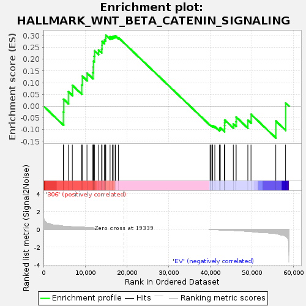
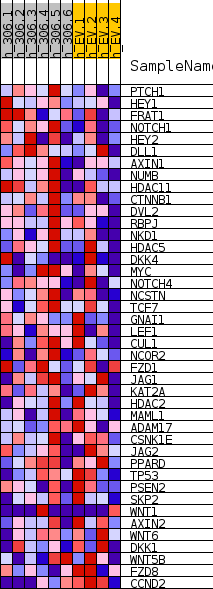
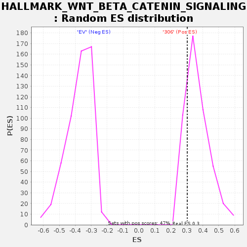

| | | Dataset | 306_EV_express.306_EV.cls#306_versus_EV |
| Phenotype | 306_EV.cls#306_versus_EV |
| Upregulated in class | 306 |
| GeneSet | HALLMARK_WNT_BETA_CATENIN_SIGNALING |
| Enrichment Score (ES) | 0.3026064 |
| Normalized Enrichment Score (NES) | 0.82360846 |
| Nominal p-value | 0.80932206 |
| FDR q-value | 1.0 |
| FWER p-Value | 1.0 |
Table: GSEA Results Summary

Fig 1: Enrichment plot: HALLMARK_WNT_BETA_CATENIN_SIGNALING
Profile of the Running ES Score & Positions of GeneSet Members on the Rank Ordered List
| SYMBOL | TITLE | RANK IN GENE LIST | RANK METRIC SCORE | RUNNING ES | CORE ENRICHMENT | | 1 | PTCH1 | NNN | 4768 | 0.356 | -0.0251 | Yes |
| 2 | HEY1 | NNN | 4818 | 0.353 | 0.0295 | Yes |
| 3 | FRAT1 | NNN | 5964 | 0.327 | 0.0615 | Yes |
| 4 | NOTCH1 | NNN | 6926 | 0.278 | 0.0888 | Yes |
| 5 | HEY2 | NNN | 9177 | 0.254 | 0.0904 | Yes |
| 6 | DLL1 | NNN | 9295 | 0.249 | 0.1276 | Yes |
| 7 | AXIN1 | NNN | 10435 | 0.206 | 0.1406 | Yes |
| 8 | NUMB | NNN | 11854 | 0.165 | 0.1423 | Yes |
| 9 | HDAC11 | NNN | 11903 | 0.163 | 0.1672 | Yes |
| 10 | CTNNB1 | NNN | 11966 | 0.161 | 0.1914 | Yes |
| 11 | DVL2 | NNN | 12148 | 0.155 | 0.2128 | Yes |
| 12 | RBPJ | NNN | 12215 | 0.154 | 0.2358 | Yes |
| 13 | NKD1 | NNN | 13219 | 0.127 | 0.2387 | Yes |
| 14 | HDAC5 | NNN | 13950 | 0.109 | 0.2435 | Yes |
| 15 | DKK4 | NNN | 14023 | 0.107 | 0.2591 | Yes |
| 16 | MYC | NNN | 14033 | 0.107 | 0.2758 | Yes |
| 17 | NOTCH4 | NNN | 14587 | 0.094 | 0.2811 | Yes |
| 18 | NCSTN | NNN | 14860 | 0.088 | 0.2904 | Yes |
| 19 | TCF7 | NNN | 14941 | 0.086 | 0.3026 | Yes |
| 20 | GNAI1 | NNN | 15972 | 0.068 | 0.2958 | No |
| 21 | LEF1 | NNN | 16508 | 0.061 | 0.2963 | No |
| 22 | CUL1 | NNN | 16883 | 0.053 | 0.2982 | No |
| 23 | NCOR2 | NNN | 17240 | 0.045 | 0.2993 | No |
| 24 | FZD1 | NNN | 17990 | 0.031 | 0.2914 | No |
| 25 | JAG1 | NNN | 39947 | -0.006 | -0.0811 | No |
| 26 | KAT2A | NNN | 40174 | -0.012 | -0.0831 | No |
| 27 | HDAC2 | NNN | 40521 | -0.020 | -0.0859 | No |
| 28 | MAML1 | NNN | 40574 | -0.021 | -0.0835 | No |
| 29 | ADAM17 | NNN | 41087 | -0.031 | -0.0873 | No |
| 30 | CSNK1E | NNN | 42199 | -0.054 | -0.0977 | No |
| 31 | JAG2 | NNN | 42404 | -0.059 | -0.0920 | No |
| 32 | PPARD | NNN | 43404 | -0.080 | -0.0963 | No |
| 33 | TP53 | NNN | 43421 | -0.081 | -0.0839 | No |
| 34 | PSEN2 | NNN | 43440 | -0.081 | -0.0714 | No |
| 35 | SKP2 | NNN | 43453 | -0.082 | -0.0588 | No |
| 36 | WNT1 | NNN | 45521 | -0.115 | -0.0760 | No |
| 37 | AXIN2 | NNN | 46172 | -0.130 | -0.0666 | No |
| 38 | WNT6 | NNN | 46187 | -0.131 | -0.0463 | No |
| 39 | DKK1 | NNN | 49004 | -0.220 | -0.0596 | No |
| 40 | WNT5B | NNN | 49760 | -0.240 | -0.0348 | No |
| 41 | FZD8 | NNN | 55705 | -0.461 | -0.0634 | No |
| 42 | CCND2 | NNN | 58049 | -0.742 | 0.0133 | No |
Table: GSEA details [plain text format]

Fig 2: HALLMARK_WNT_BETA_CATENIN_SIGNALING
Blue-Pink O' Gram in the Space of the Analyzed GeneSet

Fig 3: HALLMARK_WNT_BETA_CATENIN_SIGNALING: Random ES distribution
Gene set null distribution of ES for HALLMARK_WNT_BETA_CATENIN_SIGNALING